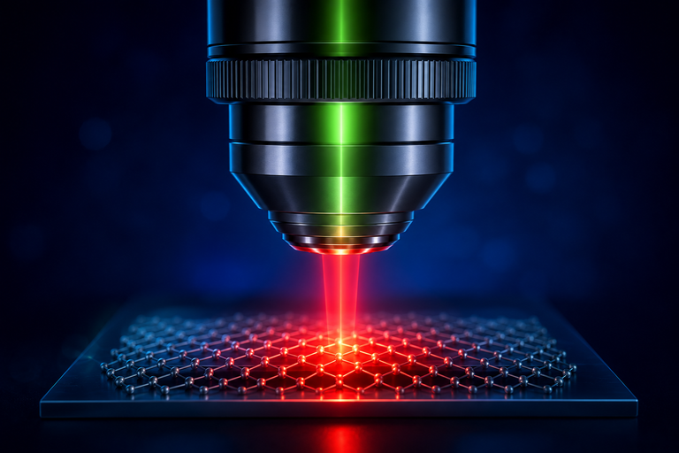

Single photon sources

Quantum networks rely on the reliable generation, transmission, and detection of single photons to distribute quantum information between distant nodes. Single-photon sources are therefore a central building block for applications such as quantum key distribution, quantum repeaters, and distributed quantum computing. A useful source emits photons on demand, with low multi-photon probability, high photon indistinguishability, and high generation efficiency, while operating at wavelengths compatible with low-loss transmission through optical fiber or free space. Solid-state platforms are a practical route toward such sources, since they allow direct, chip-scale integration with existing photonic and electronic fabrication techniques, support compact device geometries, and can be engineered to emit at telecom-compatible wavelengths. Two solid-state approaches have received particular attention in this context: sources based on nonlinear optical processes and sources based on atomic-scale defect centers in solid materials.
Our group investigates both classes of solid-state single-photon sources. In the nonlinear optics approach, we use processes such as spontaneous parametric down-conversion and four-wave mixing in engineered photonic structures to generate correlated and heralded single photons. In the defect-center approach, we study point defects in wide-bandgap materials, including nitrogen-vacancy and related centers in diamond and silicon carbide, which act as solid-state quantum emitters with well-defined optical transitions. For each platform, we characterize photon statistics, emission efficiency, and spectral properties, and assess how these properties translate into performance in quantum network settings.
A specific focus of our current work is multiplexing: combining multiple probabilistic or independent photon sources, across time, frequency, or spatial modes, to increase the effective single-photon generation rate. We study multiplexing schemes for both nonlinear and defect-center sources, including their compatibility with active optical switching, synchronization requirements, and integration with waveguide circuits. This work aims to identify practical strategies for scaling solid-state single-photon sources toward the generation rates and fidelities required for functional quantum network implementations.